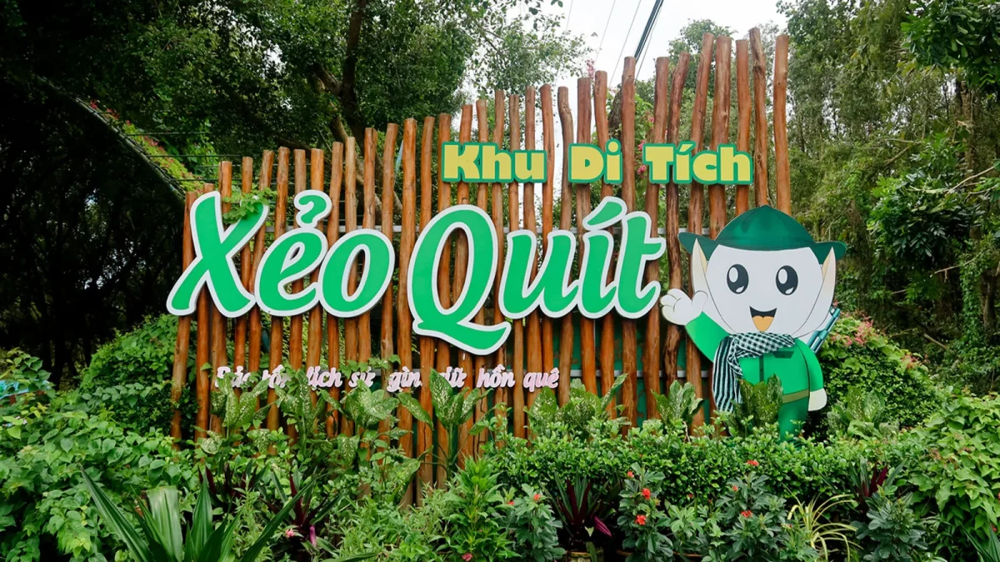

fort
Căn cứ Cách mạng Xẻo Quýt
Nằm ẩn mình giữa thảm rừng tràm nguyên sinh rậm rạp của huyện Cao Lãnh, Xẻo Quýt từng là căn cứ kháng chiến kiên cường của Tỉnh ủy Đồng Tháp trong giai đoạn khốc liệt từ 1960 đến 1975.
Bước chân vào đây, du khách sẽ được tận mắt chứng kiến mạng lưới hầm chữ A, công sự chiến đấu, và những lán trại được phục dựng nguyên bản. Nơi đây là minh chứng sống động cho nghệ thuật chiến tranh du kích, nơi quân và dân ta đã hòa mình vào thiên nhiên sông ngòi chằng chịt để che mắt kẻ thù.